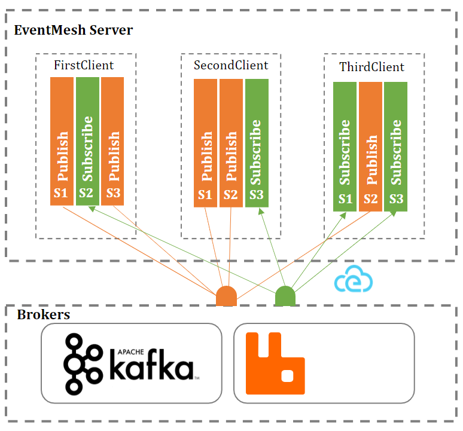
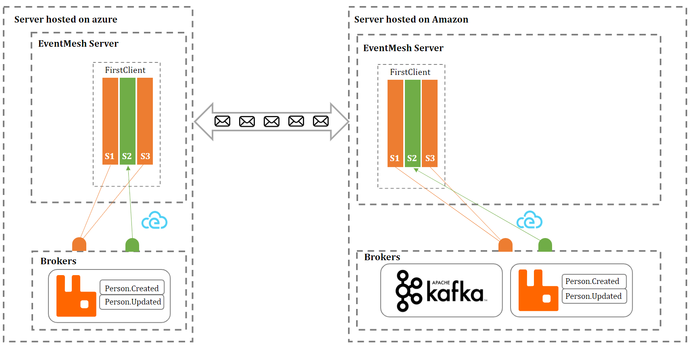

Concepts
Server
Acts as a proxy between message brokers and clients.

Client
Client can be any types of application which implements the EventMesh protocol and who are interesting on publishing or receiving messages.
Session
Client can have one or more sessions. There are two types of session :
- SUB : subscribe to one or more topics.
- PUB : publish messages.
Bridge
Link between two servers. When a bridge is established, messages can be transfered from one server to an another. Any client with an active session can subscribe to one or more topics present in different brokers and those brokers can be hosted on different machines.
The schema below shows a client with active sessions on two EventMesh servers hosted on different machines.
It has one active session which subscribed to the topic Person.*. Therefore the client can receive messages from two RabbitMQ brokers hosted on different machines.

CloudEvent
All messages coming from Brokers are translated into CloudEvent and vice versa.